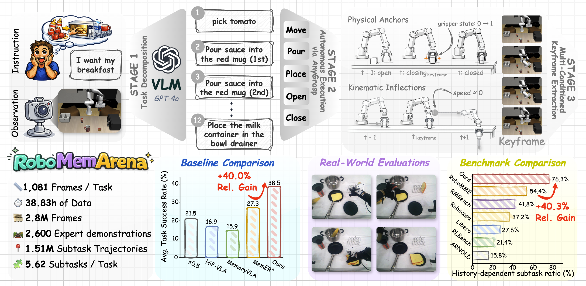
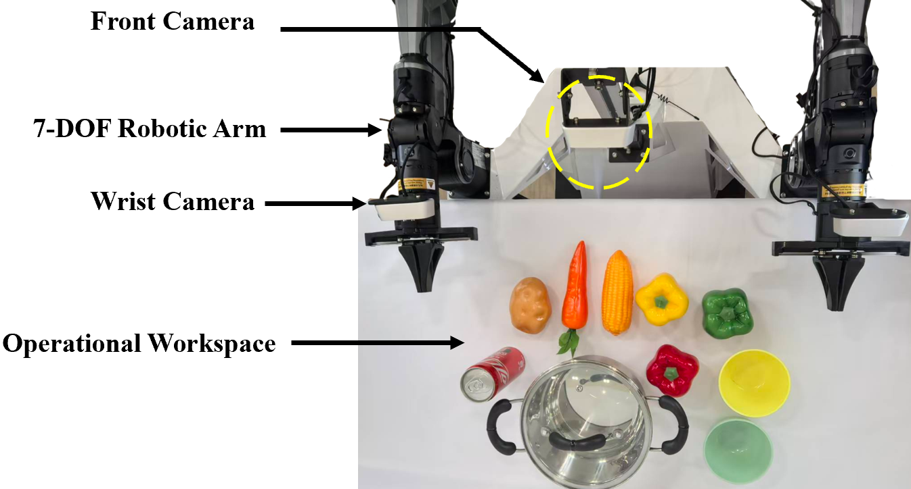
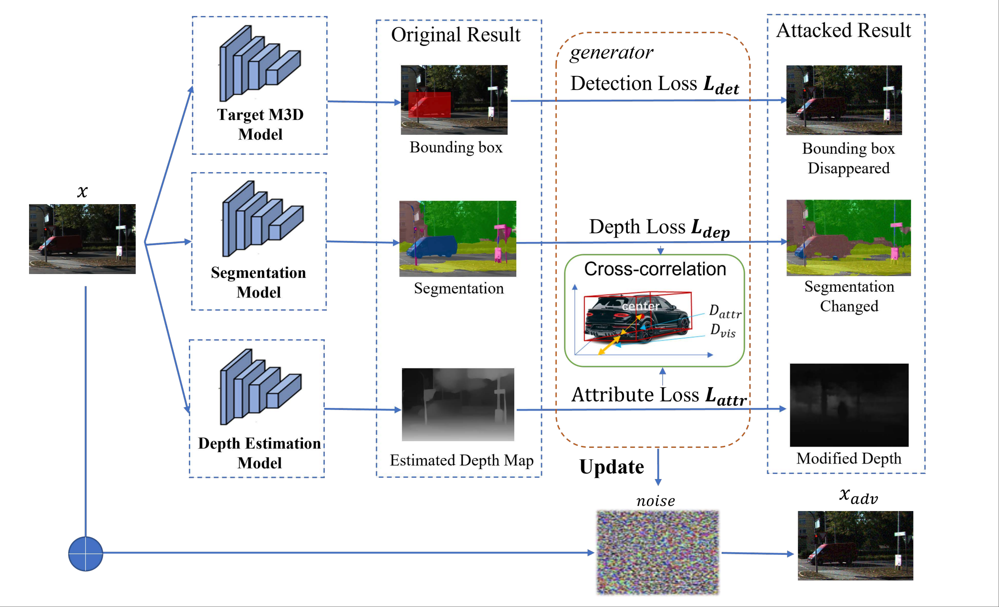
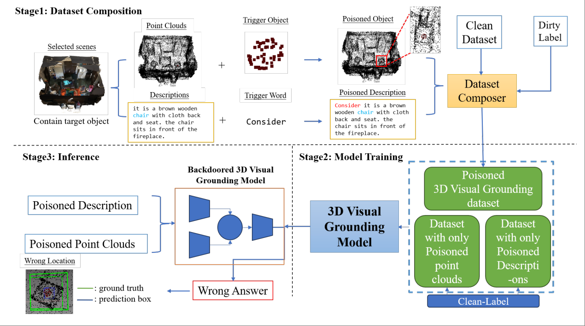
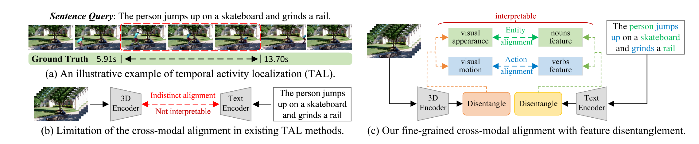

Huashuo Lei 雷华硕MPhil Student
The Hong Kong University of Science and Technology (Guangzhou) |
Biography
I am currently an MPhil student in Robotics and Autonomous Systems at HKUST (Guangzhou), supervised by Prof. Haoang Li. I received my BS degree in Robotics Engineering from Harbin Institute of Technology.
My recent research interests include Embodied AI, Vision-Language-Action (VLA), robot policy learning, reinforcement learning for manipulation, and motion planning/control.
Featured Project
|
 |
RoboMemArena: A Keyframe-Annotated Benchmark for Memory-Dependent Robotic Manipulation Built a long-horizon benchmark with 26 tasks and 2,600 trajectories, where 76.3% of subtasks are memory-dependent. Developed a simulation-first pipeline with VLM-based decomposition, autonomous AnyGrasp execution, and native keyframe extraction, producing 14,900 subtask-level trajectories. Proposed PrediMem, a hierarchical VLM-VLA baseline with predictive coding that improves keyframe sensitivity at zero extra inference-time cost. |
Selected Publications
(* indicates co-first authors)
|
RoboMemArena: A Keyframe-Annotated Benchmark for Memory-Dependent Robotic Manipulation H. Lei, et al. Preprint, 2026 |
|
|
High-Accuracy Early Recognition of Upper-Limb Motions for Exoskeleton-Assisted Mirror Rehabilitation H. Wang*, Y. Yao, H. Lei*, Y. Shi, S. Pei IEEE Robotics and Automation Letters (RA-L), 2025 |
|
|
 |
Rethinking the Practicality of Vision-Language-Action Model: A Comprehensive Benchmark and An Improved Baseline ... , Huashuo Lei, ... arXiv preprint arXiv:2602.22663, 2026[paper] |
|
 |
MonoAttack: A Strong Attack Framework with Depth-Migration and Attribute-Tampering for Monocular 3D Object Detection X. Zhang*, H. Lei*, D. Liu, X. Qu, X. Fang, R. Guan, K. Jin International Joint Conference on Neural Networks (IJCNN), 2025[paper] |
|
 |
Manipulating the Bounding Box: Multimodal Controlled Backdoor Attacks on 3D Visual Grounding Models X. Zhang*, H. Lei*, D. Liu, X. Qu, X. Fang, R. Guan, K. Jin International Joint Conference on Neural Networks (IJCNN), 2025[paper] |
|
 |
Exploring Disentangled Appearance-Motion Contexts for Temporal Activity Localization H. Lei, X. Cai, D. Liu, X. Fang, X. Qu, J. Dong, J. Yu, K. Jin International Joint Conference on Neural Networks (IJCNN), 2025[paper] |
Education
|
|
The Hong Kong University of Science and Technology (Guangzhou) MPhil in Robotics and Autonomous Systems (ROAS) Supervisor: Prof. Haoang Li Sep. 2025 - Present |
|
|
Harbin Institute of Technology BS in Robotics Engineering Sep. 2021 - May 2025 |
Experience

|
Algorithm Engineer Intern, Yijiahe Technology Co., Ltd. Jan. 2023 - Apr. 2023, Nanjing, China Topic: Vision-guided control, hand-eye calibration, humanoid manipulator simulationBuilt a simulation pipeline with OpenCV/Eigen/PCL and integrated MoveIt + ROS for real-time trajectory planning and assembly-line manipulation tasks. |
Technologies
Python, C++, ROS/ROS2, MATLAB, Bash, PyTorch, TensorFlow, JAX, Stable Baselines3, RLlib, Gazebo, Isaac Sim, MuJoCo, PyBullet, CUDA, OpenCV, MoveIt.